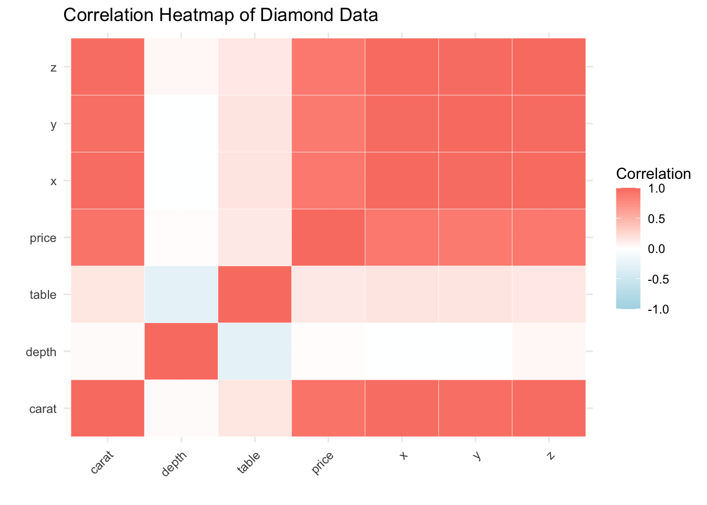
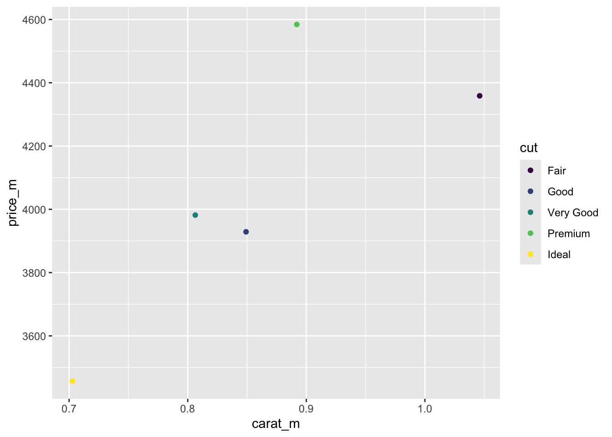

### In this code chunk, start with the diamonds dataset (built in to### ggplot2 package) and create a plot of price vs. carat (or some other### variables of your choice)#load the necessary librarieslibrary(ggplot2)#define the diamonds data from the ggplot2 packagediamonds <- diamonds#create a plot to visualize price vs. caratprice_carat_plot <-ggplot(diamonds, aes(x = carat, y = price)) +geom_point(aes(x = carat, y = price, color = cut)) +geom_smooth()#view the plotprice_carat_plot
Code
### In this code chunk, start with the diamonds dataset (built in to### ggplot2 package) and create a subset based on filtering, e.g., ### size greater than 1 carat or cut is "Ideal"library(ggplot2)data(diamonds)ideal_diamonds <-subset(diamonds, cut =="Ideal")ideal_diamonds
### Both partners - delete this comment, then write some code here### to plot, summarize, calculate something simple using the diamonds### dataset.numeric_features <- ideal_diamonds[sapply(ideal_diamonds, is.numeric)]cor_matrix <-cor(numeric_features, use ="complete.obs")# Convert the correlation matrix to a long format for ggplot2cor_data <-as.data.frame(as.table(cor_matrix))# Create the heatmapggplot(cor_data, aes(Var1, Var2, fill = Freq)) +geom_tile(color ="white") +# Add gridlinesscale_fill_gradient2(low ="lightblue", high ="salmon", mid ="white", midpoint =0, limit =c(-1, 1), space ="Lab", name ="Correlation") +labs(title ="Correlation Heatmap of Diamond Data", x ="", y ="") +theme_minimal() +theme(axis.text.x =element_text(angle =45, vjust =1, hjust =1))

Code
#load the necessary librarieslibrary(ggplot2)library(dplyr)#create a summary of the price by carat for each cutdiamonds_summary <- diamonds %>%group_by(cut) %>%summarise(carat_m =mean(carat),price_m =mean(price))#create a ggplotcarat_price_new <-ggplot(diamonds_summary, aes(x = carat_m, y = price_m)) +geom_point(aes(x = carat_m, y = price_m, color = cut)) carat_price_new

STEP 11: And even more merge conflicts!
Code
### Both partners - delete this comment, then write some code here### to plot, summarize, calculate something simple using the diamonds### dataset.